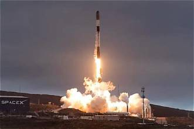
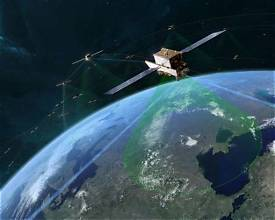
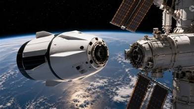
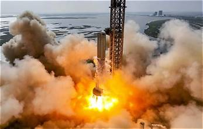
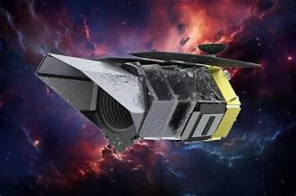

SpaceX Missions
Explore SpaceX's journey in space, from reusable rockets
and human spaceflight to satellite launches and deep-space exploration.
Explore Our Missions
Discover important SpaceX missions and their contributions
to commercial spaceflight and space exploration.

15 October 2026
USSF-481
National Security Mission
A SpaceX Falcon 9 mission supporting a United
States Space Force launch, demonstrating the
role of commercial rockets in national security.
Launch Vehicle
Falcon 9
Target
Earth Orbit
Mission Type
National Security
Status
Launched
Explore Mission →

12 October 2026
Starlink Mission
Satellite Internet
SpaceX launches Starlink satellites into orbit
to expand its global broadband network and
improve internet connectivity.
Launch Vehicle
Falcon 9
Target
Low Earth Orbit
Mission Type
Communications
Status
Launched
Explore Mission →

10 October 2026
SDA Tranche 1
Defense Satellite Mission
A Falcon 9 launch supporting the Space
Development Agency's satellite network for
tracking and communications capabilities.
Launch Vehicle
Falcon 9
Target
Earth Orbit
Mission Type
Defense Satellites
Status
Launched
Explore Mission →

1 October 2026
Crew-13
Human Spaceflight
SpaceX's Crew Dragon carries astronauts to
the International Space Station for a science
expedition and research in microgravity.
Launch Vehicle
Falcon 9
Target
ISS
Mission Type
Crew Transport
Status
Launched
Explore Mission →

28 September 2026
Starship Flight 14
Reusable Spacecraft
A Starship flight test designed to evaluate
the spacecraft and Super Heavy launch system
for future missions to the Moon and Mars.
Launch Vehicle
Starship
Target
Flight Test
Mission Type
Vehicle Testing
Status
Flight Completed
Explore Mission →

30 August 2026
Roman Space Telescope
Space Science
SpaceX's Falcon Heavy launched NASA's Roman
Space Telescope to help investigate dark energy,
dark matter, and distant planetary systems.
Launch Vehicle
Falcon Heavy
Target
Space Observatory
Mission Type
Space Telescope
Status
Launched
Explore Mission →